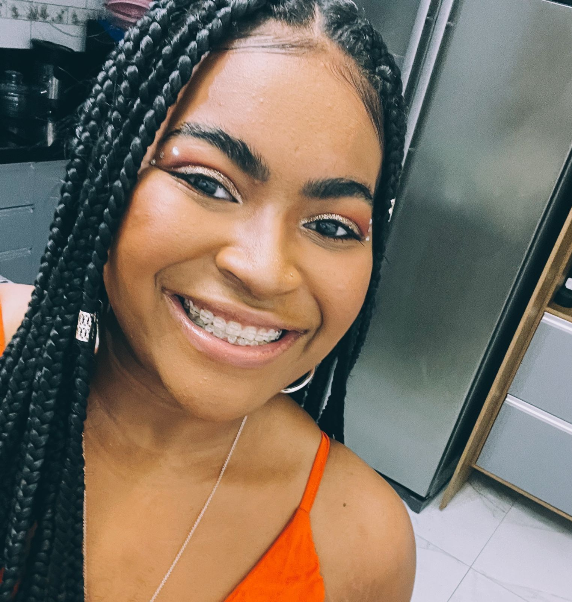

Só queria dizer que essa foto, é uma daquelas que fico horas olhando e admirando
a mulher que tenho comigo,
você consegue a cada vez que nos encontramos, a cada vez que te peço uma foto, você tem o dom de estar mais perfeita
a cada detalhe, o seu olhar é uma coisa que me cativa a cada situação e momento.

Quem ve essa foto nem imagina o perrengue
que passamos nesse dia e o trauma que criou
hahahha, mais uma história p conta.
Não tenho muito oq dizer, todas as fotos que escolhi
foi com bastante carinho tentando te mostrar com bastante
cuidado o quanto vc é importante na minha vida
e esse dia foi um daqueles que tivemos momentos nosso
de muito estresse hahahah mas tbm curtimos muito.
Queria um dia que conseguisse se enxergar
com os meus olhos, não é possivel que apenas eu veja
o quanto você é linda eu não canso de agradecer todos os dias
de ter você MINHA NAMORADA.

Cada foto me vem tantas lembranças, não consegui colocar em palavras
tudo que vivemos até agora foi muito especial,
e nossas fotos juntes eu amo todas.

Esse sorriso me mata, única coisa que te peço e você nuNca escuta,
mostra seu sorriso essa coisa perfeita que voce tem, além de ser
apaixonado em você eu sou apaixonado nesse sorriso
e essa foto destaca seus traços que eu mais amo, seu
sorriso e seu nariz.
EU TE AMO!!!!

Esse pra mim foi um dos dias mais especias em todos
esses meses que estamos juntos, pude sair abraçado contigo a primeira vez
e mostrar a mulher ESTUPENDA QUE EU NAMORO, porra que dia bom
assim como todos os outros do seu lado.
Alicia, todo esse tempo que estou contigo,
você tem me feito o cara mais realizado que ja pisou na face da terra,
você chegou na minha vida segurando comigo dois golpes
mais fortes que ja senti, você completa mais uma primavera hoje e a primeira
do meu lado, fiz essa página pra tentar esboçar o minimo que eu sinto
por você, não está la essas coisas, mas dediquei meu
tempo, cuidado e todo meu coração aqui, espero que eu possa
ter consiguido mostrar 1/3 do sinto por aqui.
EU TE AMO, Alicia!